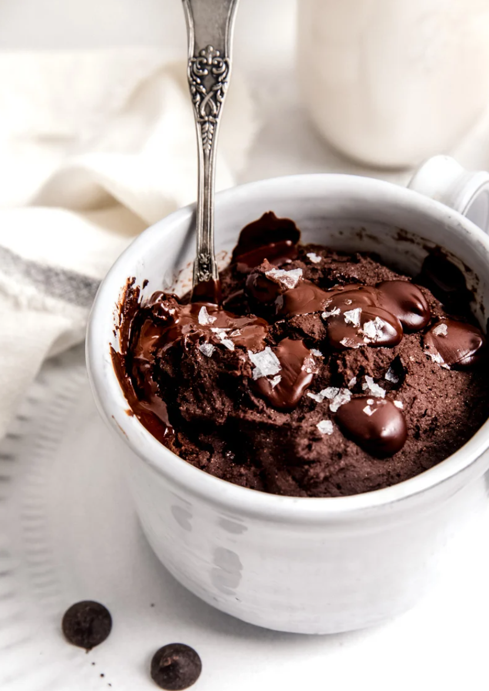

Protein Mug Cake

Description
This is a recipe for a 1-minute microwave mug cake that gives you all the protein you need to build muscle.
Ingredients
- 430g or 1 Scoop of Whey Protein Powder of Choice
- 1 Tbsp of Flour
- 1/2 Tsp of Baking Powder
- 1 Tbsp of Cocoa Powder
- 1 Egg
- 100 ml of Milk of Choice
- Semisweet Chocolate Chips (Optional)
Directions
- In a large mug, mix together the protein powder, flour, baking powder and cocoa powder
- In a separate bowl or mug, mix together one egg and 100 ml of milk.
- Combine the wet and dry ingredients in a single mug and optionally mix in some chocolate chips.
- Place mug in microwave and microwave for 1 minute or until desired temperature is reached.
- Remove from microwave, allow to cool and enjoy!